Chapter 3
Applications of millimetre wave radar for UAV detection and classification
Millimetre wave radars operate in the frequency range of 30–300 GHz and offer several advantages over lower frequency radars: (1) high-range resolution due to the availability of wider bandwidths, (2) narrow beamwidths for a given antenna aperture, (3) high-Doppler resolution in a given integration time and (4) system compactness, mainly due to the smaller antenna dimensions. Their principal drawback is that they have shorter range coverage (usually sub-km) compared to their lower frequency counterparts, which is mainly due to the greater free-space path loss, the lower available transmitter power and the general increase in receiver noise figure that all arise at shorter wavelengths. Nonetheless, in the context of unmanned aerial vehicle (UAV) detection and classification, millimetre wave radars are attractive since their good Doppler sensitivity and resolution can yield richly detailed micro-Doppler signatures from the rotating propeller blades, which provide a strong basis for robust target classification. The emerging availability of miniaturised, highly integrated millimetre wave radars, including single-chip devices, is also enabling new UAV-mounted radar systems for sense and avoid and ‘hunter-killer’ applications.
A successful UAV countermeasure system must detect and track UAVs over usefully long ranges and wide areas then discriminate them from static ground clutter and other small, slow moving confusers. Whilst humans and vehicles may move at similar speeds, they are ground-based, so birds are usually the primary airborne confusers. The radar cross section (RCS) of UAVs is comparable to that of birds, as is discussed in Section 3.2. As a result the magnitude of the radar return is not a reliable discriminant; hence micro-Doppler features are more widely used for target classification. Radar micro-Doppler signatures are intrinsic characteristics of any UAV due to the propeller rotation. The concept of the micro-Doppler signature of an object and its effect on radar signal returns is thoroughly discussed in [1–3] along with the mathematical approaches for extracting micro-Doppler information from radar data.
This chapter presents a comprehensive survey of published work on millimetre wave radar applied to UAV detection and classification, covering the reported radar systems, UAV RCS characteristics and micro-Doppler signatures. Recent work on the specific signatures of UAVs equipped with a variety of threat payloads is then described. The chapter concludes with a review of classification methods that are applied to millimetre wave radar data in order to discriminate UAVs.
3.1 Millimetre wave radar systems for UAV detection
In recent years, the availability of low-cost components at millimetre wave frequencies has increased, mainly driven by the markets for automotive radar (at 77 GHz) and free-space communications (e.g. 60 GHz). Additionally, as future commercial applications of the millimetre wave spectrum emerge (e.g. next generation car radar, 5G and 6G communications), more semiconductor components and chipsets are becoming available at even higher frequencies. This has facilitated the development of radar systems for a variety of applications at these frequencies with reduced cost and greater integration. Within the wider context of UAV detection radar research [4], a number of research groups in academia and industry have specifically been exploring millimetre wave radars for detecting UAVs, and this section presents an overview of these systems. It should be noted that only radars operating at frequencies within 30–300 GHz are included in this survey. Whilst there are quite a few 24 GHz systems reported for this application, those are excluded here as this frequency is not technically millimetre wave.
Prior to the advent of consumer UAVs, the US Army Research Laboratory reported the Doppler signatures of an MI-24 Hind-D helicopter in 1998 using a 92 GHz continuous wave (CW) radar [5]. Whilst not a UAV, this was one of the first published reports of the millimetre wave micro-Doppler signatures of rotor blades. The radar, which had a transmit power of +23 dBm and used 24 dBi standard gain horns in vertical polarisation (Figure 3.1), was Doppler calibrated before measurement and the helicopter engine was modified for remote operation. Doppler spectra up to ±150 kHz were measured with a resolution of ∼1 Hz.
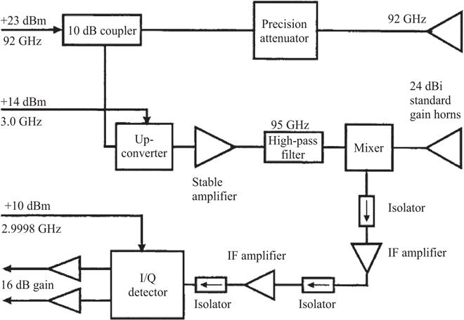
Figure 3.1 Block diagram of the 92 GHz CW radar built at the US Army Research Laboratory for Doppler measurement of an MI-24 Hind-D helicopter [5]
The same institute later developed a fully polarimetric 216 GHz frequency modulated continuous wave (FMCW) radar for micro-Doppler measurements, initially for human targets [6]. The radar had a transmit power of +17 dBm for vertical polarisation and +2.6 dBm for horizontal polarisation and a chirp bandwidth of 1.6 GHz. In 2014, this radar was used for micro-Doppler measurements of a toy helicopter – the first known millimetre wave radar measurements of a UAV [7]. It is believed that this remains the highest reported frequency radar measurement of a UAV.
Warsaw University of Technology presented the use of a 35 GHz FMCW staring mode radar in 2016 [8]. The radar, known as DANIEL-35, was originally designed as a synthetic aperture radar and the front end was developed with the support of the Fraunhofer Institute for High Frequency Physics and Radar Techniques (FHR). The radar operated with +33 dBm transmit power and 1 GHz bandwidth, obtaining fine range resolution. Results obtained showed the radar detecting a DJI Phantom 2 quadcopter and a DJI S1000 octocopter at ranges up to 50 m, with range Doppler plots showing the micro-Doppler signatures. Whilst ISAR capability was mentioned, no such results were reported. There appears to have been no further publications arising from the use of this radar to detect UAVs.
The Fraunhofer Institute for High Frequency Physics and Radar Techniques (FHR) has been one of the most prolific institutions in this field, and they have developed multiple millimetre wave radar systems for UAV detection. Their designs frequently benefit from using state-of-the-art millimetre wave semiconductor devices, such as power amplifiers and low noise amplifiers, developed by the Fraunhofer Institute for Applied Solid State Physics (IAF). In 2015, they introduced two radar systems for perimeter surveillance and detection of UAVs [9].
The first system, named Scanning Surveillance Radar System (SSRS), is a 94 GHz FMCW mechanically scanned radar operating with +20 dBm transmit power and 750–1,000 MHz bandwidth for high-range resolution [10,11] – Figure 3.2 (left). SSRS uses slotted waveguide sectoral horn antennas with a narrow azimuth beamwidth of 1.25° and an elevation beamwidth of 13° which rotate at 8 Hz for 360° target localisation and tracking. The preliminary results showed a 2D range tracking based detection of a −20 dBsm target using RCS values, as seen in Figure 3.2 (right). The target was detected up to 150 m. The radar was also used with an optical high-resolution camera to augment target identification.
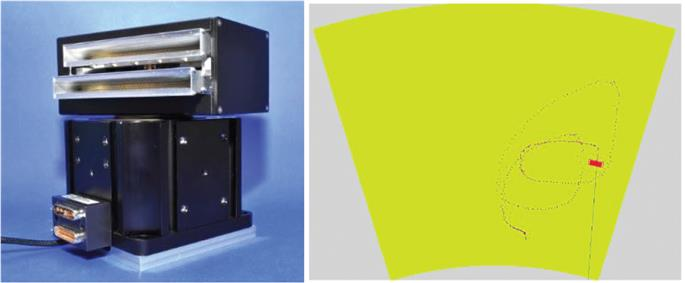
Figure 3.2 (Left) Fraunhofer Institute for High Frequency Physics and Radar Techniques (FHR) 94 GHz FMCW Scanning Surveillance Radar System (SSRS) and (right) PPI plot of real-time detection and tracking of a quadcopter using SSRS. The colour code represents the RCS of the detected UAV [9]
The second system, named Multi-Channelled Radar for Perimeter Surveillance (MuRPS), is a staring 94 GHz FMCW radar with four receive antennas in an azimuth-elevation monopulse configuration, covering 30°–60° in azimuth depending on the antenna choice – Figure 3.3 (top). The system, which was developed for detecting UAVs up to several hundred metres, operates with +20 dBm transmit power and 1 GHz bandwidth [10,11]. The monopulse architecture was selected to achieve 3D localisation of targets without the need for scanning antennas – a network of up to six units would provide 360° azimuth coverage. In Figure 3.3 (bottom), RCS-based detection and tracking results show that MuRPS can detect small UAVs out towards 100 m. The signal-to-noise challenge of detecting low-RCS targets with a millimetre wave radar out to ranges greater than 100 m using low gain, wide beamwidth antennas is highlighted in [12].
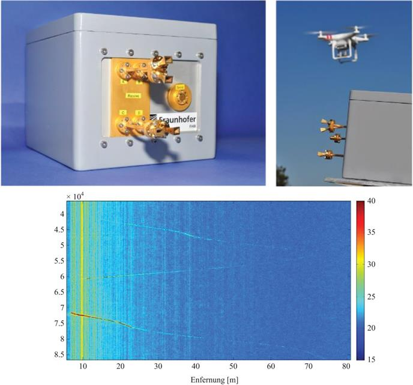
Figure 3.3 (Top) Fraunhofer FHR 94 GHz MuRPS system used for UAV detection and (bottom) range-time plot of UAV detection and tracking using MuRPS [9]
Fraunhofer FHR considered a ‘radar fence’ multi-sensor network for UAV detection in urban environments in 2018, with the goal of achieving 200 m range [13]. To reduce costs and maximise target observation time, two non-moving antenna concepts were considered: frequency scanning antennas and monopulse (e.g. MuRPS). An electronically steered 60 GHz substrate integrated waveguide meander antenna design is presented and used to detect UAVs, but only at very short ranges. For the monopulse approach, highly integrated, single chip, radar front ends at 30, 60 and 94 GHz are proposed and transmit–receive leakage is shown to hamper this architecture. A real-time FPGA-based detection and classification architecture is proposed. Another highly integrated 60 GHz FMCW monopulse radar sensor suitable for a radar fence, with +15 dBm transmit power and 2 GHz bandwidth, is reported in [14]. Low phase noise chirp generation, as required for high clutter urban environments, is achieved using a low-cost voltage controlled oscillator and phase locked loop architecture.
Another radar used for UAV detection by Fraunhofer FHR is MIRA-CLE Ka which is a 36.2 GHz pulsed MIMO radar with time multiplexed 16 transmit and 16 receive antennas forming 256 virtual elements (Figure 3.4) [15]. It was originally developed to detect slowly changing subcentimetre deformations in hillsides or walls. In 2016, this radar was modified for UAV detection which requires the rapid measurement of fast motions [16,17]. Only 8 transmit antennas were used (128 virtual elements) and the radar operated with 400 MHz bandwidth. The wide beam, staring MIMO radar yielded azimuth-range-Doppler data from a hexacopter at ranges of 100–150 m with a signal-to-noise ratio (SNR) of ∼20 dB. The challenge of detecting slowly moving UAVs in the presence of non-stationary clutter (e.g. wind-blown trees) is noted. Doppler analysis of the targets was also done for classification purposes. In [18], MIRA-CLE Ka was used alongside optical and acoustic sensors within a multi-sensor UAV detection trial. Multi-copter targets were detected out to ranges of 200–300 m.
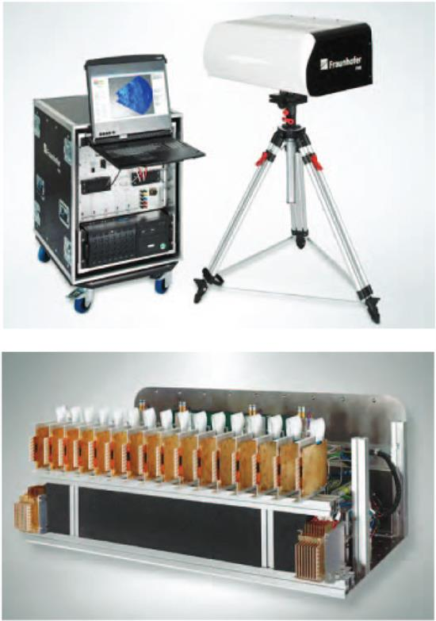
Figure 3.4 Fraunhofer FHR MIRA-CLE Ka radar system [15]
In 2017, 35 GHz radar measurements of UAVs are reported by the University of Siegen and Fraunhofer FHR [19]. The single-channel radar was assembled using parts from a 3D imaging MIMO radar within the Radar Warning and Information System (RAWIS). It operates in CW mode with +30 dBm transmit power and uses two horn antennas with 20 dBi gain. The radar was used to gather micro-Doppler data with a maximum Doppler of ±25 kHz from four different types of quadcopters, one octocopter, one small helicopter and one fixed-wing plane. The gathered data was processed to obtain spectrogram, cadence velocity diagram (CVD) and cepstrogram plots. Singular value decomposition (SVD) was used for feature extraction and then support vector machine (SVM) for classification training. The classification accuracy range for different UAVs was 96.2%–100%.
The University of St Andrews reported using several 94 GHz radars to measure UAVs in 2017. A basic CW radar based on a 94 GHz Gunn oscillator was used to collect blade flash micro-Doppler signatures of a single-propeller blade in the laboratory [20]. The same paper presented bulk and propeller micro-Doppler signatures of a DJI Phantom 3 UAV flying at a range of 120 m, collected with a 94 GHz FMCW radar called NIRAD, using 600 MHz bandwidth and a 6.9 kHz chirp repetition frequency (CRF). In [21], the authors used another 94 GHz low phase noise radar called T-220 (Figure 3.5), to collect CW data of a flying UAV and a bird-like biomimetic UAV. A sampling frequency of 100 kHz was used to collect unambiguous micro-Doppler data, allowing individual blade flashes to be obtained from a single propeller on a Phantom 3 at a range of ∼20 m. Very recently, the same authors have reported a low noise, compact 77 GHz FMCW-Doppler radar, designed specifically for drone detection, which uses elevation fan beam antennas that rotate 360° in azimuth [22]. The radar is capable of detecting a Phantom 3 out to ∼300 m based on SNR and classifying as a UAV out to ∼150 m. Details of the classification are not given for commercial reasons, but it is based on micro-Doppler and is reported to work even for drones with zero bulk Doppler, i.e. hovering.
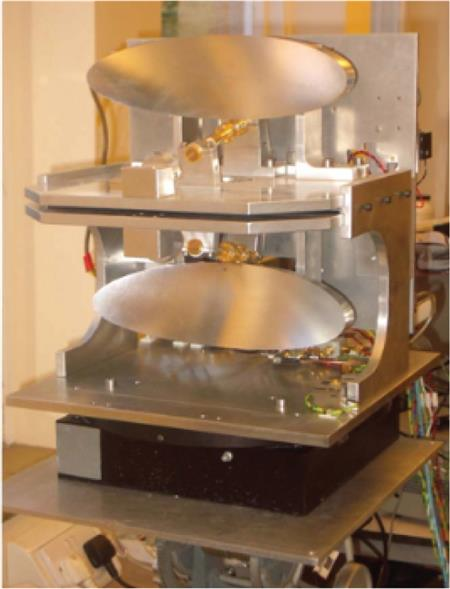
Figure 3.5 University of St Andrews W-band radar system T-220 [21]
A lab-based homodyne CW radar was built at Gwangju Institute of Science and Technology and used to collect data on 1, 2 and 4 propeller blades in 2018 (Figure 3.6) [23,24]. The system comprises MMIC transmit, receive and down converter modules and operates at 92.16 GHz with +25 dBm transmit power and uses 23 dBi horn antennas. The micro-Doppler signatures obtained were processed to extract blade length and rotation rate.
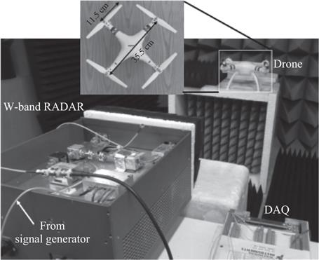
Figure 3.6 Gwangju Institute of Science and Technology W-band lab-based CW radar for propeller blade signature analysis [23]
A prototype UAV detection system was developed by KAIST to investigate target fluctuation characteristics [25]. This is a 34.5 GHz chirp-pulse radar using three pulse widths for range ambiguity resolution. The radar transmit power is +23 dBm and the bandwidth is 75 MHz. A Cassegrain antenna is used and whilst the gain is not specified, it appears to be of order 30 cm in diameter. The radar easily detected a large hexacopter out to 850 m. Doppler from the propeller blades was measured out to 240 m with the blades rotating in the conventional horizontal plane and out to 1,000 m when the drone was orientated so the blades rotated in the vertical plane, presenting a larger surface area. The report proposes that the fuselage of a UAV is a non-fluctuating Swerling 3 target that would benefit from coherent integration whilst the blades are fluctuating Swerling 4 targets that would benefit from non-coherent integration. However, no statistical analysis of experimental data is presented to confirm the proposed Swerling types. The chapter concludes that for better detection performance, both coherent and non-coherent integrations should be implemented due to the low SNR and rapid RCS fluctuation of the UAVs.
The Technische Universität Ilmenau reported a 34–35 GHz single-input–multiple-output bistatic radar configuration in 2018 [26]. A 12-bit pseudo-random binary sequence was used as the modulating signal and a maximum-likelihood parameter estimation method was used to determine target range and bearing. The low link gain available limited the measurements of various UAVs to less than 20 m.
XY-Sensing Ltd, a spin-off company from Warsaw University of Technology, reported using a 122 GHz radar system for UAV detection, named XY-DemoRad in 2019 (Figure 3.7) [27]. The system is based on the single-chip radar transceiver developed by Silicon Radar GmbH [28] which was integrated with a DSP unit. This FMCW radar operates with −3 dBm transmit power and maximum bandwidth of 2 GHz and uses a lens to augment the integrated patch antennas. The demonstrator system comes with a built in GUI for operation and trial results show the UAV being detected at ∼11 m with negligible micro-Doppler signature. Some very close range measurements (∼2 m) were also performed with this system and the micro-Doppler signatures were reported in [29].
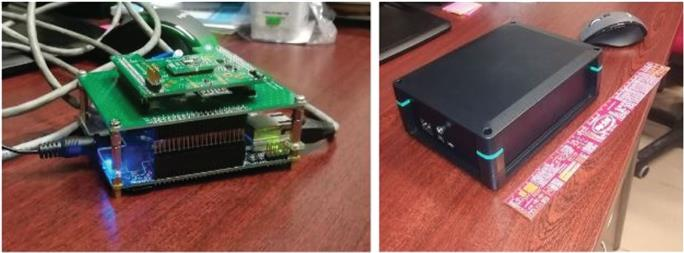
Figure 3.7 (Left) XY-Sensing Ltd XY-DemoRad radar hardware and (right) radar hardware enclosed in cover [27]
A system level analysis of a proposed 37.5 GHz GaN-based FMCW 2×2 MIMO radar for UAV detection was published in 2019 by the University of Florence – Figure 3.8 (top) [30]. Design and simulated performance are presented for the power amplifier, low noise amplifier and zero-IF mixer GaN ICs. The proposed radar design would have +36.8 dBm transmit power, receive antenna gain of 18 dBi and transmit antenna gain of 12 dBi and a bandwidth of 1.5 GHz. System level simulations are shown for different numbers of MIMO virtual elements (4×16 and 2×2), indicating that the performance would increase with more virtual elements. The critical aspect of minimising transmit–receive leakage is emphasised – Figure 3.8 (bottom) – and can be mitigated by using more MIMO elements. No measurements of UAVs are reported.
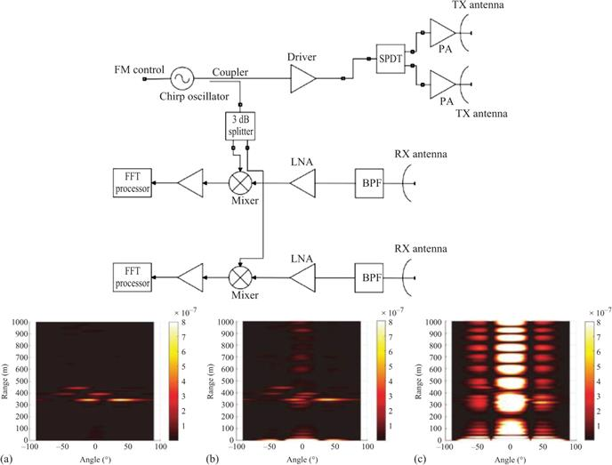
Figure 3.8 (Top) Block diagram of a 2×2 GaN-based FMCW MIMO radar from University of Florence and (bottom) a 2×2 MIMO radar image related to three identical UAVs, with an average RCS of −10 dBsm, with different levels of TX-to-RX leakage: (a) −70 dB, (b) −50 dB and (c) −40 dB [30]
Recently, the University of Coimbra proposed a slightly different approach to detecting UAVs: using a small UAV-mounted radar to detect and track other UAVs [31]. They selected a 76–81 GHz Texas Instruments AWR1642 2D radar with two Tx and four Rx antennas, which yields range and azimuth information, and mounted it on a Sky Hero Spyder X4 UAV. An Extended Kalman Filter algorithm, which makes a use of the changing radar position, was used to track and localise the target UAV. During the experimental trial, the target UAV was a smaller Sky Hero Little Spyder and the system was able to detect it up to 25 m. The AWR1443 3D radar version (range, azimuth, elevation) was also used but was not sensitive enough for detection. In [32], a 3D position estimation method based on successive 2D measurements by the manoeuvring pursuer UAV is proposed and validated with experimental results obtained at similar range.
Several companies have been marketing millimetre wave radar systems for UAV detection. ELVA-1 Ltd offers a 76 GHz radar [33], Texas Instruments are promoting their 76–81 GHz single-chip-based evaluation modules [34] and Plextek have developed a miniature 60 GHz radar for UAV-mounted situational awareness [35]. Russian firm RTI recently announced that they are developing a submillimetre wave (or terahertz) radar for detecting miniature UAVs [36].
3.2 Millimetre wave RCS of UAVs
Knowing the RCS of a given type of target is critical information for radar system designers. Detailed characterisation is needed to determine the static RCS as a function of polarisation, aspect angle and bistatic angle plus the dynamic statistics of how it fluctuates as the target moves. The RCS of UAVs is known to be low at microwave frequencies, principally due to their small size and typically low metal content – they are constructed mostly from plastics and carbon fibre which reflect weakly [37]. Their complex shape confers strong variations in RCS with angle. To date, there are only a few reports on RCS modelling and measurement of different types of UAVs at millimetre wave frequencies and an overview of those studies is given below.
In 2017, Ilmenau University of Technology and Saab Medav Technologies GmbH performed wideband measurements of Ka-band static RCS of three types of unspecified UAVs (quadcopter, hexacopter and helicopter, in that order of increasing size) [38]. The data collection was done in an anechoic chamber for full polarimetric backscatter behaviour investigation with respect to different UAV shapes, azimuth angle and bistatic angle. The frequency range was 30.4–37.1 GHz, azimuth angle range was full orientation (0°–360°) and the bistatic angle range was 30°–150°. The results were analysed to find out the influences of these factors. In Figure 3.9, the effects of the orientation angle and frequency are clearly observed and the RCS values of the UAVs vary from −50 to −20 dBsm. The results confirm the general trend of greater RCS with increasing UAV sizes. The effect of polarisation is strongly evident in the bistatic data. Unlike monostatic measurements where the scattering matrix is typically symmetric, for larger bistatic angles, distinct differences in the cross-polar components become visible. In Figure 3.10, it can be seen that backscattering along the side arms of the rotors produces cross-polar components, which are useful features for target detection. Hence, it was proposed that a polarimetric joint processing of co- and cross-polar data is required for robust UAV detection.
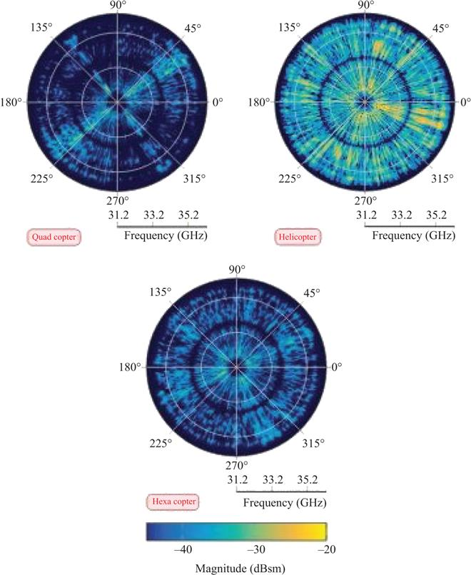
Figure 3.9 Static RCS of different UAVs versus incidence angle and frequency across 30.4–37.1 GHz for 30° bistatic angle and VV polarisation. The dark ring in the middle of the frequency axis is due to a hardware filter that splits the wideband measurement into two sub-bands [38]
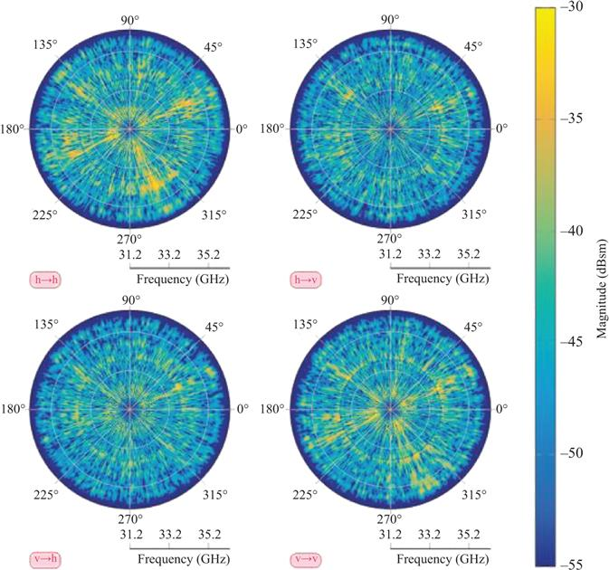
Figure 3.10 Static RCS in different polarisations of the hexacopter versus aspect angle and frequency across 30.4–37.1 GHz for 30° bistatic angle [38]
Comprehensive quasi-monostatic RCS measurements of nine different rotary wing UAVs using a 26–40 GHz VNA based radar were reported in 2020 by Université Catholique de Louvain, VTT, Aalto University and NYU Wireless [39]. As seen in Figure 3.11, the antennas were mounted on a mast at one end of the anechoic chamber and their RCS measured in the lower hemisphere, mimicking the view from below as if seen by a ground-based radar. Note that the measurements are reported as a function of the positioner angles of azimuth (θ) and roll (φ). Since the UAVs were mounted sideways on the positioner, these axes correspond to the elevation and azimuth angles respectively of the UAV with respect to the in-flight vertical axis, as viewed by a radar. The transmit antenna was a standard gain horn whereas the receive antenna was a dual polarised Vivaldi horn. The UAVs were divided into two groups: (1) small UAVs made of plastic materials (DJI F450, Phantom 4 Pro, DJI Mavic Pro Quadcopters and Kyosho helicopter) and (2) large UAVs made mainly of carbon fibre (DJI Matrice 100, custom built hexacopter, HMF Y600 and Walkera Voyager 4). A 10,000 mAh 6-cell LiPo battery was also measured. Figures 3.12 and 3.13 illustrate the RCS characteristics with respect to the positioner azimuth and roll angles at 38 GHz for the group 1 and group 2 UAVs, respectively. Statistical analysis of the RCS values over the measured angles shows that the mean RCS of group 2 UAVs was ∼7 dB higher than for group 1 and the maximum value is 10–20 dB higher for group 1, which is expected as those are larger and made of carbon fibre which reflects more strongly than plastic. The mean RCS at 40 GHz of the group 1 UAVs varied from −15 to −11.9 dBsm at 40 GHz and from −13.6 to −6.1 dBsm for the group 2 UAVs. The mean RCS increases slightly with frequency (at ∼0.25 dB/GHz) irrespective of UAV model and the standard deviation is consistently ∼6 dB irrespective of frequency or UAV model. Also, no significant variation was found between HH and VV measurements. The report presents a very comprehensive table of the mean, standard deviation and maximum RCS values of all the UAVs for all frequencies and polarisations (mainly co-polar). Cross-polar values are only available for the M100, showing ∼7 dB lower mean RCS than the co-polar values. The measurement results are available as an open database, which is very valuable to researchers in this field.
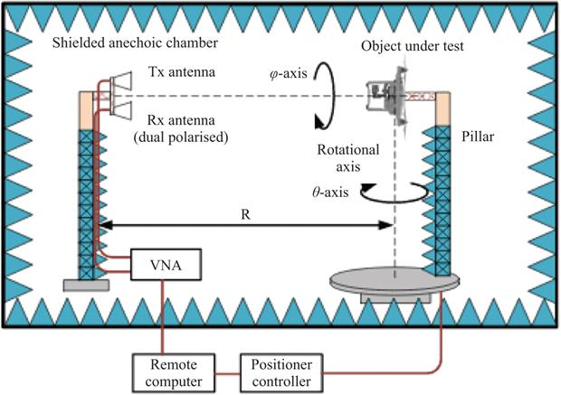
Figure 3.11 Schematic view of the RCS measurement set-up based on a 26–40 GHz VNA based in an anechoic chamber from [39]. Note that θ and φ are the positioner azimuth and roll angles, respectively
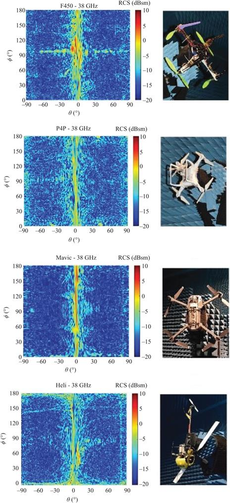
Figure 3.12 RCS values of UAVs from group 1 with respect to positioner azimuth (θ) and roll (φ) angles at 38 GHz [39]
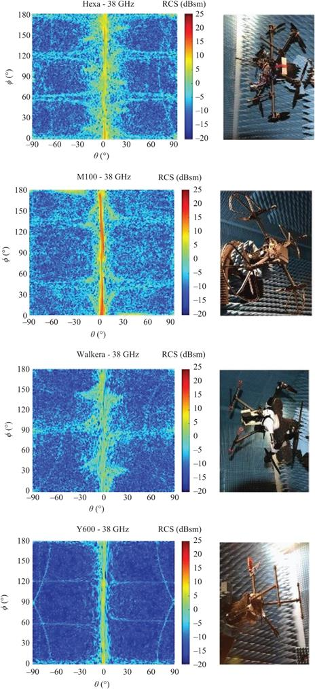
Figure 3.13 RCS values of UAVs from group 2 with respect to positioner azimuth (θ) and roll (φ) angles at 38 GHz [39]
For system performance modelling and real-time classification, if RCS values are to be used as one of the features, it is important to know the dynamic RCS characteristics of UAVs as they fly and manoeuvre, plus those of any confusers such as birds. The dynamic RCS fluctuation of UAVs at high microwave frequencies can be quite significant as they are electrically large, complex structures of distributed scattering elements.
Detailed measurement and analysis of the in-flight RCS of UAVs and birds at W-band were reported by the University of St Andrews in 2019 [40]. Two coherent 94 GHz radars, previously used for vibrometry and micro-Doppler studies of various targets, were used during the experimental trials and were amplitude calibrated to within ±1 dB. The first system is a low phase noise, heterodyne 94 GHz FMCW radar called NIRAD [41]. The transmit power is +20 dBm. It has a circular polarised (CP), 42.5 dBi gain single pencil beam antenna (0.74° azimuth and 0.8° elevation beamwidths). Owing to the very narrow beamwidth in both planes, NIRAD was only used for hovering target measurements. The second system is a very low phase noise, homodyne 94 GHz FMCW/CW radar called T-220 [42]. The transmit power is +18 dBm and its noise figure is 6 dB. This radar has a dual fan beam antenna (0.9° azimuth and 3° elevation beamwidths) with 40.5 dBi gain and operates in single-bounce CP. Both radars were configured to use 150 MHz bandwidth for 1 m range bins. Three different sizes of UAVs were used, with the following details:
- DJI Phantom 3 Standard (weight 1.216 kg, width 35 cm, blade length 13 cm)
- DJI Inspire 1 (weight 2.845 kg, width 58 cm, blade length 34.5 cm)
- DJI S900 (3.3 kg, width 90 cm, blade length 38.1 cm)
The UAVs were always flown at least 7 m above the ground and no further than 150 m range to minimise clutter returns from the ground and distant trees. Care was taken to ensure that only those data were considered where the targets were well within the radar beam. On average, a typical measurement run was about 5–7 s long, accumulating more than 20,000 chirps in a single dataset for any given radar. The data was then processed to generate RCS histogram plots along with the corresponding empirical cumulative distribution function (ECDF) plots being overlaid.
Example RCS results for the UAVs at 94 GHz are shown in Figure 3.14. In Figure 3.14(a), the Phantom 3 was hovering 102.5 m away from the NIRAD radar and 12 m above the ground. The RCS modal value is −23 dBsm and the maximum is −15 dBm. A secondary peak in the histogram is observed at around 6–8 dB higher than the modal value. This phenomenon is often observed in the case of the Phantom but not all the time and not for the other UAVs. It is suggested that this is because the propeller blades of the Phantom, which are quite close to each other and to the fuselage, sometimes line up and increase the overall return signal. Figure 3.14(b) shows RCS values obtained with T-220 when the Phantom was flying radially back and forth between approximately 60 and 80 m and at least 7 m above the ground. The RCS modal value is −20 dBsm, the distribution is wider and extends to higher values and contains subsidiary peaks. This is attributed to the greater range of static RCS values available when viewed from a diversity of aspect angles, as seen in the anechoic chamber measurements described earlier. Figure 3.14(c) shows example RCS distribution plots of the hovering DJI Inspire 1 at 94 GHz measured with T-220 in which the modal RCS is −16 dBsm. Figure 3.14(d) shows example RCS values for the flying S900 at 94 GHz measured with T-220 in which the modal RCS is −9 dBsm. These results confirm the trend reported in the static RCS publications in [38,39] that the RCS increases with increasing size of the UAV – this is illustrated with overlaid histograms and ECDF plots for the three UAVs in Figure 3.15(a). In Figure 3.15(b), two example RCS distribution plots are shown for the DJI Inspire 1 at 94 GHz measured with T-220. The UAV was hovering at 85 m range and at 8 m altitude. The histograms compare the Inspire hovering with the body stationary and when it was rotating slowly through 360° in azimuth whilst hovering. The RCS modal value increases by about 2 dB and the histogram width increases by about 5 dB when the whole fuselage is rotating on the spot. The Inspire has a relatively asymmetrical geometrical shape compared with the other two UAVs (it has a long, thin fuselage) and so has a greater variation in RCS with azimuth angle than the other two UAVs.
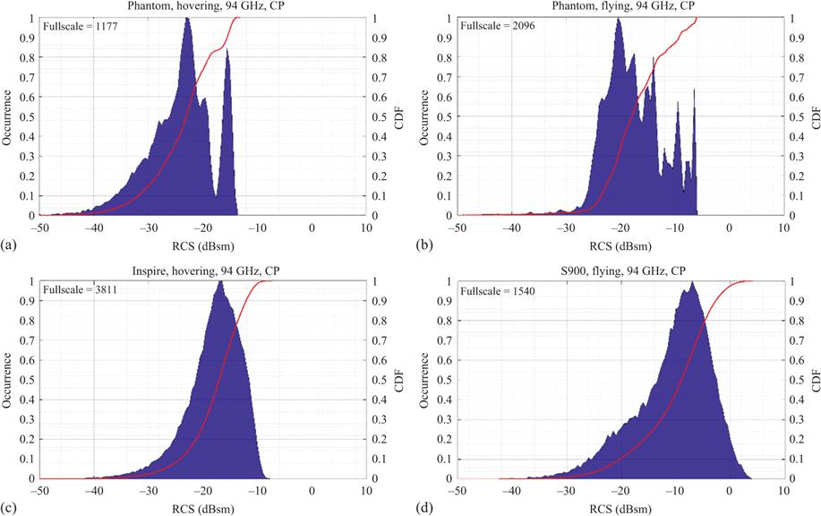
Figure 3.14 (a) 94 GHz RCS histograms and the corresponding ECDF plots of hovering DJI Phantom 3 Standard, (b) flying DJI Phantom 3, (c) hovering DJI Inspire 1 and (d) flying S900 [40]
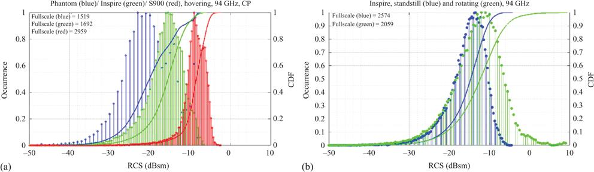
Figure 3.15 94 GHz RCS histograms and the corresponding ECDF plots of UAVs: (a) comparison of Phantom 3, Inspire 1 and S900, (b) comparison of Inspire hovering stationary versus hovering whilst rotating slowly on the spot [40]
These results clearly illustrate the fact that in real scenarios the RCS values will fluctuate substantially due to the dynamics of these electrically large, complex targets. Table 3.1 provides a summary of the 94 GHz in-flight RCS values obtained from multiple measurement runs for the three UAVs. Whilst these results were obtained with odd-bounce CP, the values are expected to similar for VV and HH with little polarisation dependence, as reported in [39]. A remaining open question which has yet to receive definitive analysis is which Swerling model best describes the RCS fluctuation statics of UAVs at millimetre wave frequencies? Whilst not discussed in detail here, [40] confirms that the millimetre wave RCS distributions of birds in flight overlap closely with those of UAVs of similar size. This confirms that using RCS as a feature for discriminating between UAVs and birds is unlikely to be successful so other features such as micro-Doppler signatures must be used.
Table 3.1 Summary of 94 GHz RCS statistic for three UAVs (odd-bounce circular polarisation) [40]
| Target | Average modal RCS (dBsm) | Maximum RCS (dBsm) | Average CDF 10% and 90% points (dBsm) |
|---|---|---|---|
| DJI Phantom 3 Standard | −20 | −6 | −27.5, −12 |
| DJI Inspire 1 | −15 | −2 | −23, −11 |
| DJI S900 | −8 | 2 | −21, −2.5 |
3.3 Millimetre wave micro-Doppler signatures of UAVs
The micro-Doppler effect in radar has direct frequency dependence. Considering L as the radial length of a rotating propeller blade from its centre and Ω as the rotation rate in revolutions/second, the blade tip velocity is Vtip = 2πLΩ. The maximum Doppler shift can then be readily calculated as
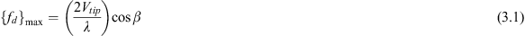
where β is the elevation angle of the radar boresight with respect to the propeller axis of rotation and λ is the radar wavelength [3]. It can be seen from (3.1) that the maximum Doppler frequency is proportional to the radar operating frequency. This means that using a higher frequency radar yields a comparatively higher frequency Doppler signal for a given target velocity which may then be measured with a finer resolution in a given integration time. Additionally, the Doppler spectrum may be more distinct from zero-Doppler clutter and hence more easily allow the measurement of very slow moving targets. These attributes are advantageous for a millimetre wave radar when measuring low-speed UAVs and for producing high-quality micro-Doppler signatures of the propeller blades, which is one of the most essential features for target discrimination. Simple simulations of the micro-Doppler signatures of a UAV can visually illustrate the effect. In Figure 3.16, spectrogram plots, generated using a short-time Fourier transform (STFT), are shown of simulated radar return signals at 10 and 94 GHz from a DJI Phantom 3 Standard. The model is based on the UAV’s geometry (four rotors, each with double-ended propeller blades of radial length 13 cm and spaced in a square on a diagonal of 41 cm from the fuselage centre). The propellers are modelled as rotating sticks whose RCS is around 30 dB lower than the fuselage which itself is modelled as a single point target at the centre of the UAV [20]. The rotors usually rotate at different rates to maintain required orientation; hence different rotation rates were allocated (80, 47, 69 and 77 Hz). The sampling rate was defined to be 100 kHz, to avoid Doppler aliasing. In Figure 3.16 (top), the spectrogram is generated for 10 GHz centre frequency and the blade flash signatures are quite hard to detect. In contrast, the spectrogram at 94 GHz in Figure 3.16 (bottom) shows a much wider Doppler excursion and very clear blade flash signatures, demonstrating the advantage of millimetre waves in the context of UAV micro-Doppler. Whilst operation at higher frequencies requires a higher Doppler sampling rate, this is a worthwhile trade-off as it significantly increases the fidelity of the micro-Doppler signatures obtained, which can improve the performance of classification algorithms.
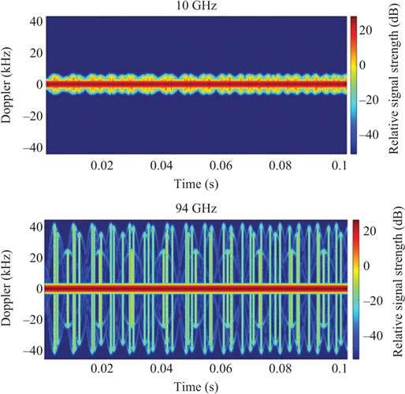
Figure 3.16 Simulated spectrograms of a hovering DJI Phantom 3 Standard at 10 GHz (top) and at 94 GHz (bottom) showing better resolved micro-Doppler blade flashes in the latter
3.3.1 FMCW micro-Doppler signatures
In practice, a radar-based UAV detection and classification system will mostly operate in pulsed or FMCW mode with the ability to measure range as it enables localisation of the UAV for tracking, along with classification, which cannot be done using CW radar. One issue with using an FMCW radar for micro-Doppler-based UAV detection is that the CRF must be quite high to achieve unambiguous Doppler sampling. For instance, according to the product specification of the DJI Phantom 3 Standard, the propeller rotation rate can be up to 280 Hz leading to a maximum Doppler frequency of 143 kHz at 94 GHz from (3.1). To comply with the Nyquist criterion for unambiguous Doppler sampling, the radar needs to operate at a CRF of at least 286 kHz. This not only puts strain on the hardware but also on the computational load, requiring extremely fast chirps (<3.5 µs) which are difficult to generate without distortion, very high frequency digitisers to sample the resulting high baseband frequencies (likely to be in the 100s MHz) and rapid processing of extremely large amounts of data. Hence, in most cases, FMCW radars operate with sub-Nyquist CRF and produce micro-Doppler signatures of the propeller blades that are aliased. Nonetheless, they can still be used very effectively for classification as very few other targets (especially birds, the main confusers) produce signatures at such high Doppler values. The mere presence of a micro-Doppler signature beyond a certain Doppler threshold can be a very good indication of the presence of a UAV. A few example FMCW micro-Doppler signature plots are discussed later.
In Figure 3.17, millimetre wave spectrogram plots of a flying DJI Phantom 3 Standard are shown [20]. The data was obtained by using the 94-GHz NIRAD radar [41]. The chirp duration was 102.4 μs and the chirp repetition interval was 144 μs and the sampling rate was 10 MHz. The radar operating bandwidth was 600 MHz, corresponding to a range resolution of 25 cm. The maximum unambiguous Doppler frequency can be readily calculated from the chirp interval and is 3.47 kHz. Figure 3.17 (top) illustrates a spectrogram (with STFT window length 73.7 ms) for a single-range bin. The UAV was flying at a range of approximately 120 m from the radar, at an angle to the radar beam, and passed through the beam between 1 and 2.1 s. The bulk Doppler in bright red is in the range of 2–3 kHz (3.2–4.8 m/s radial velocity) and the change in bulk Doppler frequency is clearly evident, as are the fluctuations in the magnitude due to the changing aspect angle on the UAV. The micro-Doppler features can be seen around both sides of the bulk Doppler; the under-sampled propeller micro-Doppler is spread across the Doppler spectrum. A very good SNR of the UAV was observed at this range: ∼50 dB for the fuselage and ∼25 dB for the propellers. In Figure 3.17 (bottom), the UAV flew on a radial flight path within the radar beam and the spectrogram was produced from all the range bins it passed through. As can be seen in the first 0.5 s of the image, the bulk Doppler exceeds the maximum unambiguous value and Doppler aliasing has occurred.
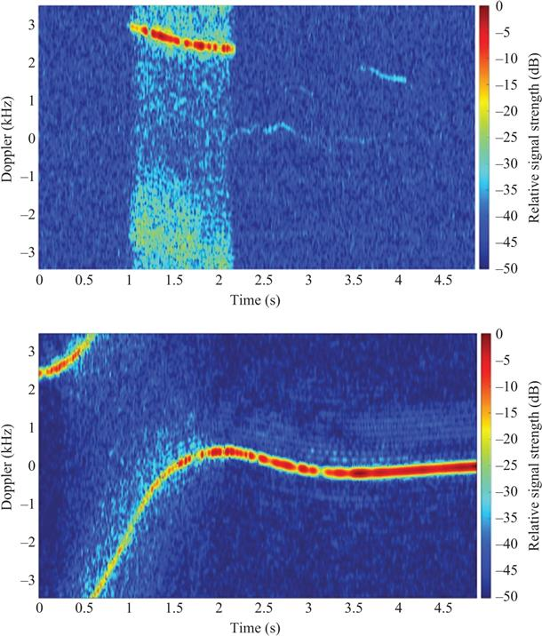
Figure 3.17 (Top) A 94 GHz spectrogram from a single range bin of a flying DJI Phantom appearing in the radar beam and then disappearing again and (bottom) a spectrogram obtained from multiple range bins along the UAV’s flight path. In both spectrograms the STFT window length was 512 samples/73.7 ms [20]
The frequency resolution of the spectrogram can be increased by using a longer STFT window, which reveals Helicopter Rotor Modulation (HERM) lines for periodically rotating targets [43]. Figure 3.18 (top) gives an example of such a spectrogram for a quadcopter showing the HERM lines (STFT window length 294.9 ms) and Figure 3.18 (bottom) is a Doppler slice taken from that spectrogram for better visualisation of the HERM line spacing [20]. In theory, the HERM line spacing is directly related to the rotation rate of the blades [43]. The HERM lines in Figure 3.18 are quite complicated as the signal is modulated by the returns from four propellers on four rotors rotating at different speeds and the radar return signal is under-sampled in the Doppler domain.
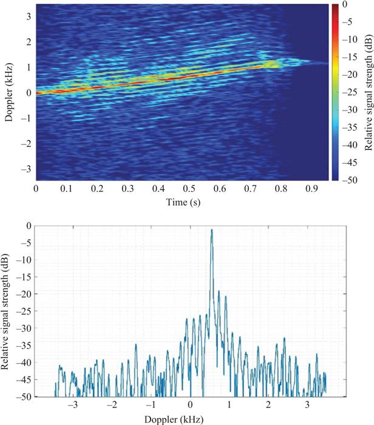
Figure 3.18 (Top) A 94 GHz spectrogram of the DJI Phantom using long STFT window (2,048 samples, 294.9 ms) and (bottom) Doppler frequency slice obtained from the spectrogram with long STFT window showing the HERM lines [20]
It is also possible to reveal the rapid temporal modulations in the Doppler spectrum caused by propeller blades, known as blade flashes, if a short window is used in the STFT and the Doppler spectrum is fully sampled. The NIRAD radar was used to measure a hovering DJI Phantom 3 Standard at a range of ∼45 m. A very high CRF of 50 kHz (chirp repetition interval of 20 μs) was used to achieve a maximum unambiguous Doppler frequency of 25 kHz. Figure 3.19 shows the resulting spectrogram which clearly reveals the fully sampled individual blade flashes [44]. The rotation period (two blade flashes) is ∼13 ms so the rotation rate is ∼77 Hz, which is consistent with the typical rotor speed for a Phantom in normal flight.
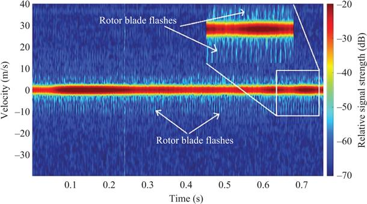
Figure 3.19 A 94 GHz spectrogram of DJI Phantom hovering at ∼45 m range obtained with a very high chirp repetition frequency of 50 kHz and short window STFT (512 samples, 10.2 ms) revealing individual blade flashes [44]
The micro-Doppler signatures of various UAVs have been investigated using the 94 GHz T-220 radar [44]. In Figure 3.20 (top), a spectrogram derived from FMCW data of two UAVs (DJI Phantom 3 Standard and DJI Inspire 1) flying simultaneously at ∼75 m range is shown. The UAVs flew radially along the radar beam at different heights and in opposite directions. For both UAVs, both the bulk Doppler and micro-Doppler signatures are quite prominent. The micro-Doppler signature of an S900 hexacopter shown in Figure 3.20 (bottom) is even stronger, likely due to the increased size of the propeller blades compared with the other two UAVs.
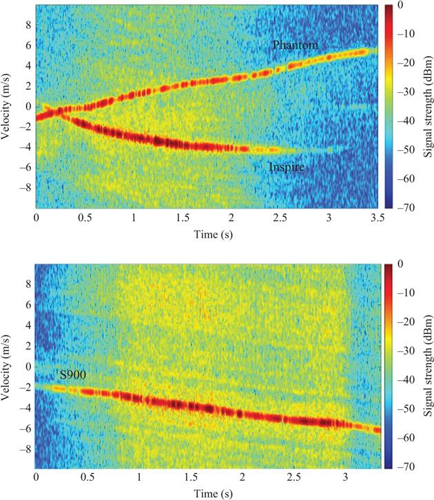
Figure 3.20 94 GHz spectrograms of (top) DJI Phantom 3 Standard (∼75 m range) and DJI Inspire 1 (∼85 m range) flying together and (bottom) a flying DJI S900 Hexacopter at ∼95 m range [44]
To demonstrate the distinctiveness of millimetre wave micro-Doppler signatures from UAVs compared with other moving targets, Figure 3.21 shows a spectrogram of a Tawny Eagle flying and approaching the perch 30 m away from the radar [44]. The radar set-up was the same as for the results shown in Figure 3.20. A strong micro-Doppler signature due to the wing flapping is observed around the bulk Doppler, which is aliased in the first few seconds. When compared with UAV spectrograms, the differences in micro-Doppler characteristics are clearly obvious. Whilst UAVs and birds can fly at similar speeds and hence have similar bulk Doppler, the spectrograms reveal significant differences in the micro-Doppler signatures. Bird wing flaps occur on a significantly longer timescale (100s ms) than propeller blade flashes (few ms) and this difference allows them to be differentiated reliably for classification.
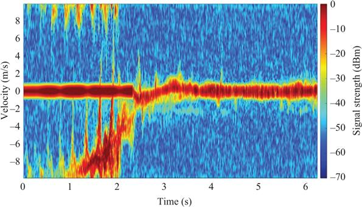
Figure 3.21 A 94 GHz spectrogram plot of a Tawny Eagle approaching the perch, showing distinct wing flaps and a very different micro-Doppler signature from a UAV [44]
Another way to display micro-Doppler information is the range-Doppler plot processed from a single coherent processing interval (CPI). Figure 3.22 shows some example range-Doppler plots of different UAVs obtained by various millimetre wave radars operating at different centre frequencies. The return from the UAV fuselage appears as a bright spot at the range and bulk Doppler coordinates measured in that CPI. If the micro-Doppler returns from the propellers are visible to the radar, they appear as a wide spread in the Doppler axis, centred on the bulk Doppler. When FMCW modulation is used, as discussed earlier, the Doppler is often under-sampled so the micro-Doppler energy is spread right across the Doppler axis.
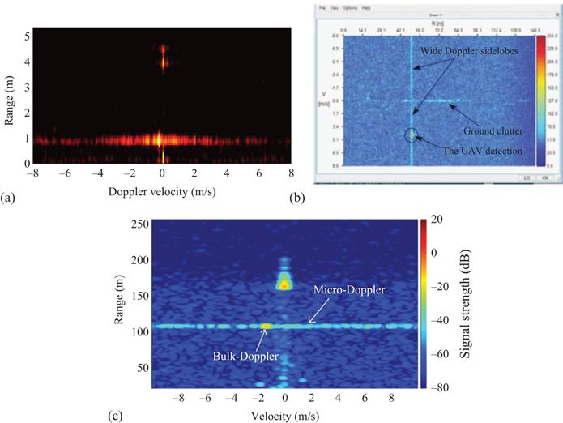
Figure 3.22 (a) Range-Doppler plot of a mini helicopter in flight at ∼1 m at 216 GHz [7], (b) range-Doppler plot of DJI Phantom 2 at ∼40 m range at 35 GHz [8], (c) range-Doppler plot of a DJI S900 in flight at ∼110 m at 94 GHz [44]
3.3.2 CW micro-Doppler signatures
CW radars have the advantage of more easily sampling Doppler without ambiguity, which is very pertinent for analysing the micro-Doppler signatures of the very fast rotating propeller blades of a UAV. Due to the larger Doppler spread and fine Doppler resolution achievable at millimetre wave frequencies, detailed information on the propeller blades can be obtained.
The micro-Doppler signals from UAVs contain signatures from multiple blades rotating at different rates. To observe the propeller signature of a single blade, data was collected from a Phantom held static with only one propeller blade fitted and the motor idling [45]. Measurements were made using the 94 GHz T-220 radar operating in CW mode with a 100 kHz sampling rate to ensure unambiguous Doppler sampling. Figure 3.23 shows the spectrogram which clearly reveals the sinusoidal tip motion and blade flashes. Note the blade flashes are asymmetric in Doppler due to the curved profile of the blades and the viewing angle of the radar. The periodicity and maximum tip velocity can be used to extract the propeller length. In Figure 3.24, 94 GHz CW spectrograms are presented for three different UAVs, hovering at close range (∼15–30 m), measured with T-220 in CW mode at a 200 kHz sampling rate [46]. The difference in the micro-Doppler signatures is visually noticeable, which is due to the different sizes and shapes of the blades. For instance, the blade flashes for the S900 in Figure 3.24 are quite straight and have distinct Doppler maxima due to the straight leading edges and square tips of the blades. The micro-Doppler traces of the Joyance are much more curved which is consistent with the more curved blade profile. The low-frequency Doppler components differ between the UAVs as well due to the shape of the roots of the blades and the motor bodies. The presences of multiple blades rotating at different frequencies make the spectrograms more complex than the idealised single propeller case. The information present in these spectrograms is very rich and can even be used for determining the type of UAV [46]. Figure 3.25 shows the spectrogram plots and extracted peak frequencies of single, double and quad rotor blades obtained with a W-band CW radar [23]. The peaks from the blade flashes were used to determine the rotation rate and subsequently the blade length, which could be characteristic of the type of UAV.
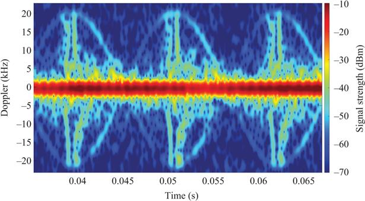
Figure 3.23 A 94 GHz CW spectrogram of DJI Phantom held by hand with only one propeller blade rotating and the other blades removed [45]
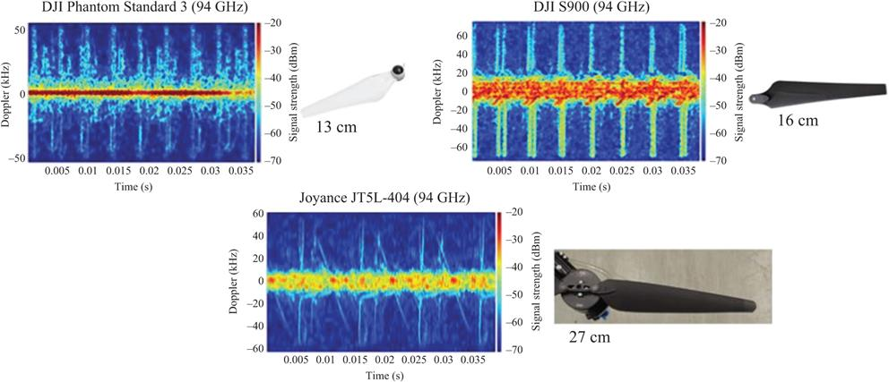
Figure 3.24 94 GHz CW spectrograms of a DJI Phantom 3 Standard, DJI S900 and Joyance JT5L-404 and the corresponding propeller blades [46]
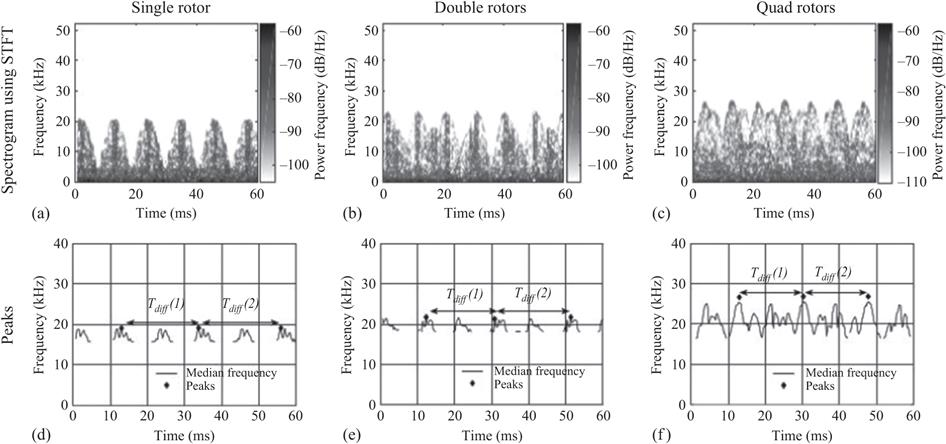
Figure 3.25 Analysis of received data from a 92.16 GHz CW radar: spectrograms using STFT for (a) single, (b) double and (c) quad rotors; (d)–(f) median frequency with markers on alternate peaks [23]
3.3.3 Alternative time–frequency analysis methods
Whilst the STFT is the most commonly employed time–frequency transform, other methods to analyse millimetre wave micro-Doppler signatures have been reported. In [19], 35 GHz CW micro-Doppler measurements of UAVs were analysed using STFT, CVD and cepstrogram. CVD was used to obtain information on the cadence of repeating frequencies over time and the cepstrogram was used to obtain an estimate of occurring periodicities in the UAV spectrograms, i.e. the blade flash frequency and hence rotation rate of the rotors. The rotation rate and blade length were extracted successfully from the data. Different feature vectors were extracted from these three types of time–frequency diagrams and used for classification (discussed in Section 3.5). CVD and cepstrogram analysis were also applied to UAV data measured with the MIRA-CLE Ka radar in [47]. It was noted that the cepstrogram consistently indicates the possible rotor flash frequencies (two blade flashes per revolution). A wavelet transform analysis of UAV Doppler data has also been done, as presented in [21]. It was shown that wavelet transforms can be used to segment the high-frequency components (corresponding to propeller blade rotation) from the low-frequency components (fuselage return), which then can be further used for classifying the target. No apparent advantage of using wavelet transforms over spectrograms was observed apart from their lower computational load (O(n)) compared to fast Fourier transform (O(n·log2(n))). However, in practice, very efficient FFT library functions are more readily available than similarly effective fast wavelet transform functions.
3.4 Signatures of UAVs equipped with payloads at a millimetre wave
Whilst there is a growing body of literature on the in-flight micro-Doppler signatures of drones in their standard configurations, there is comparatively little work reported on the radar signature of UAVs equipped with payloads. The ease with which UAVs can be modified to carry payloads has made this a tangible security threat, where the UAVs can be used to carry out malicious acts like spreading biochemical weapons, carrying a firearm, grenades or other contraband. Millimetre wave radars can be very useful to sense such actions due to their high range and Doppler sensitivity and, in the first example, stronger backscatter from liquid droplets. This section presents work considering the following three different scenarios:
- UAV equipped with liquid spray payload
- UAV equipped with simulated recoil
- UAV equipped with heavy payload
3.4.1 UAV equipped with liquid spray payload
In [48], the analysis of the radar signature characteristics of small water droplets sprayed from a UAV, mimicking a chemical weapon attack, was performed. A commercially available crop spraying UAV named Joyance JT5L-404 [49] was used as the basis for liquid droplet radar backscatter modelling and for experimental data acquisition. The spray nozzle droplet parameters were used to model the RCS and the SNR of the liquid droplets at X-, K- and W-bands, using the Rayleigh approximation. Additionally, experimental data was obtained simultaneously with 24 and 94 GHz radars. The processed results show very good agreement with the model. It is clearly demonstrated that at W-band (94 GHz), the liquid spray produces strong micro-Doppler signatures observed from the range-Doppler plots (Figure 3.26), whereas no such detection was possible at K-band (24 GHz). The experimental results validate the hypothesis that a millimetre-wave radar offers superior sensitivity than lower frequency bands to reflections from liquid spray droplets of ≪0.5 mm size and the behaviour is consistent with Rayleigh scattering. Figure 3.27 illustrates this quite clearly as the measured SNRs from the liquid droplets at 94 GHz match quite well with the theoretical values. In contrast, at those ranges (20–50 m), the predicted SNR at 24 GHz was below 0 dB, so no backscatter was measured in this case. Hence, a millimetre wave radar system could potentially be used for detecting and classifying a UAV with a liquid spray payload.
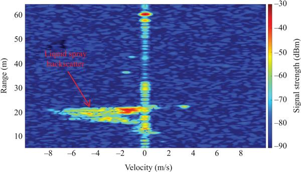
Figure 3.26 A 94 GHz range-Doppler plot of crop spraying UAV at ∼22 m range and the radar antenna being bore sighted at the spray below the UAV [48]
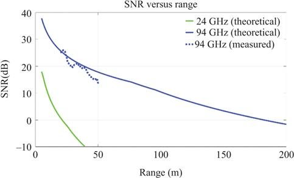
Figure 3.27 SNR of liquid spray versus range showing theoretical curves for the 94 and 24 GHz radars and the measured data at 94 GHz. No spray was detectable at 24 GHz [48]
3.4.2 UAV equipped with simulated recoil
In [50], it was investigated whether inertial forces due to a dynamic payload impart characteristic changes on the UAV’s radar signature which can be used to identify the particular payload. The hypothesis is that a UAV reacting to some payload-induced inertial force, such as a UAV-mounted gun, is likely to show a characteristic change in its kinematic behaviour and position as it jerks about then re-stabilises. This will correspond to recoil and counter-recoil, respectively. The focus was only on FMCW data collection, as the recoil and counter-recoil effects will be more apparent from the bulk Doppler signature than the micro-Doppler. The lower Doppler sampling rate of the FMCW radar gave a relatively long integration time and hence a high Doppler resolution. The 94 GHz experimental data was collected on a DJI Phantom 3 Standard UAV subject to a sudden inertial force. As it was not possible to use a real gun due to logistical and safety reasons, the impulses were applied to the UAV by pulling it sharply several times using a wire. The wire was a few metres long with one end attached to the main body of the UAV and the other end to the tip of a wooden pole. This pole was held upwards and by sharply pulling it backwards, a horizontal impulse was applied to the UAV fuselage, thus simulating the recoil effect. Due to the UAV’s internal stabilisation mechanism, it then returned to its previous position, which is the counter-recoil. The Doppler signature of the experimental data is seen in Figure 3.28 (top), where the recoil and counter-recoil effects are observed from the bulk velocity trace. A velocity–time profile can be produced by tracing the bulk velocity peaks from the spectrogram and then subsequently a force–time profile can be created by using basic force–velocity relations. Figure 3.28 (bottom) shows a close-up of impulse 4 in Figure 3.28 (top) to illustrate the details of this signature. The impulse (labelled ‘recoil’) takes place over a few hundred milliseconds, characteristic of the stick and wire jerk technique, and is followed by a longer, damped oscillation, stabilisation and recovery process (labelled ‘counter-recoil’) which is characteristic of the UAV’s flight controller properties. This exhibited a Recoil Impulse of 1.71 N s which is nearly within a factor of 2 of the value for a Glock pistol (3.5 N s) [51]. The characteristic shape of the response could be used for classification.
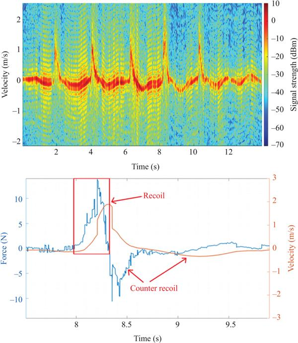
Figure 3.28 (Top) A 94 GHz FMCW-Doppler spectrogram of Phantom 3 subject to five impulse events and (bottom) close-up of impulse 4 force–time and velocity–time profiles showing recoil and counter-recoil regimes [50]
3.4.3 UAV equipped with heavy payload
In [50], 94 GHz CW data was collected for a DJI S900 hexacopter with four different weights attached as heavy payloads (1, 1.6, 2, 2.5 kg). The payloads could be released remotely, hence providing the opportunity to analyse the effect of the radar signature change due to the presence or absence of the payload. The drop in the rotation rates of the propeller blades after the release was observed in all cases. This is to be expected since a heavier payload will make the UAV rotors spin faster to generate more lift. The spectrograms contain contributions from more than one blade; hence it is not always straightforward to calculate the rotation rate. Instead, SVD was used to determine the dominant rotational frequency within a spectrogram. Figure 3.29 (bottom) shows a clear increasing trend in the rotational frequency with heavier weights. It was also observed that the frequency value saturates at 200 Hz and whilst the reason is not fully understood; it may be due to the motor reaching the maximum rotational speed.
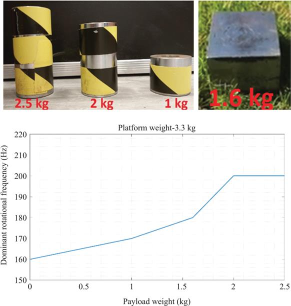
Figure 3.29 (Top) Steel payloads used for the experimental trials which were attached to the S900 with remote controlled electromagnet and (bottom) propeller dominant rotational frequency for S900 versus attached payload weight, measured at 94 GHz [50]
Even though there is a clear change in micro-Doppler signatures due to the presence of a heavy payload, this does not provide a robust basis for classification. First, these measurements are relative and it is unlikely that the rotational rate of a particular UAV without payload will be known beforehand. Second, other factors like wind or platform manoeuvres can generate the same effect. Hence, for reliable detection of the presence of heavy payloads, further information is required, perhaps from a different sensor providing information on the wind speed in the area or passive RF sensor providing information on the UAV type. It is possible that multiple successive classifications could average out the effects of wind or manoeuvres and potentially improve payload classification.
3.5 Classification methods of UAVs using millimetre wave data
The eventual goal for the radar measurement of UAVs is to use the data to classify the target. Different classification methods have been applied to millimetre wave radar data of UAVs, as discussed in this section.
Feature extraction based classification is quite widely used for radar data of all frequencies, and there have been a few reports of the approach being applied to millimetre wave radar data. In [19], 35 GHz measurements of UAVs and birds were analysed using STFT, CVD and cepstrogram, from which various features were extracted and then classified using an SVM. A classification accuracy of 100% was achieved when classifying UAVs versus birds with randomly selected training and test data. The accuracy dropped to 96.2% when classifying small UAVs versus medium-sized UAVs.
In [45], the following features were extracted from 94-GHz FMCW radar Doppler data: (1) micro-Doppler spread width, (2) micro-Doppler spread weight, (3) micro-Doppler strength and (4) micro-Doppler periodicity. The last feature was extracted by performing a Fourier transform on the first row vector of the SVD unitary matrix. The other features were obtained by calculating feature values directly from the spectrogram plots, in order to avoid computationally expensive operations such as SVD as much as possible. The targets used for the feature extraction were three UAVs (Phantom 3, Inspire 1 and S900) and four birds of different sizes (Northern Hawk Owl, Harris Hawk, Indian Eagle Owl and Tawny Eagle). To verify the performance, the feature values were used to train two well-known classifiers, linear discriminant (LD) and SVM. It was clearly shown that the features are very distinctive for birds versus UAVs, enabling an identification of the targets, with both the classifiers showing 100% prediction accuracy during training – see Figure 3.30. It was also shown that the proposed method can differentiate the three different types of UAVs, achieving accuracies of 100% for LD and 91.7% for SVM. Much lower accuracy (<25%) was observed for birds alone as their features overlapped with each other when all four birds were considered. However, the prediction performance improved significantly by considering only the largest and smallest birds (87.5% with LD, 100% with SVM). Overall, it was demonstrated that the proposed algorithm has very good potential to be used in a UAV detection FMCW radar system, to classify UAVs and birds in a dynamic environment. The method described here uses thresholds very close to the noise floor to extract the micro-Doppler information, which requires high fidelity Doppler measurements, best achieved by using a very low phase noise radar with excellent spectral purity.
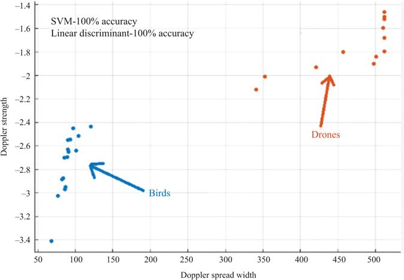
Figure 3.30 Screenshot of the Classification Learner App in MATLAB® while performing the training for two classes (birds and drones) using 94 GHz radar data, showing 100% accuracy with both SVM and linear discriminant classifiers [45]
One issue with the feature extraction based classification is the computational time. The raw radar data first needs to be time–frequency analysed for Doppler information, then further computation is done to extract feature values. For real-time operation, this becomes a compromise between processing time and classification accuracy. Alternatively, a neural network based classification has the potential to reduce the computational load for real-time operation as the computationally heavy work is done in advance when the model is trained. Then, the processed data can be fed directly to the trained model for rapid target prediction, eliminating the time required for feature extraction. In [52], a convolutional neural network (CNN)-based classification based on spectrogram images was reported. A large dataset was created to train a neural network using mainly 94 GHz FMCW data but to achieve diversity, 24 GHz FMCW data was included as well. Supervised training was done by labelling the targets into four classes initially (UAV, bird, clutter, noise) and then two classes (UAV, non-UAV). For 4-class training, each class had 600 spectrogram images, each 0.4 s long – see Figure 3.31, for examples. The number was limited by the availability of bird images. For 2-class training, each class had 1,000 images. One of the very popular and effective CNN models, GoogLeNet [53], was used as a pre-trained network. The advantage of using this is that the first few convolutional layers can be frozen as those correspond to low-level features (line, curve, etc.). During training, the first 10 layers were frozen. As GoogLeNet requires 3-channel RGB images and radar spectrograms are false colour images, the same dataset was produced in greyscale and was trained with a newly developed series network for comparison. During training, 80% data was used for training and 20% for validation. The validation and testing accuracy for the developed series network were found to be 99.6% and 94.4%, respectively, for four classes and 99.3% and 98.3%, respectively, for two classes. The GoogLeNet-based model showed both validation and testing accuracies to be around 99% for all the cases. Both models have been tested with previously unseen data and have again shown very good accuracy. GoogLeNet performs better but is more time-consuming compared to the series network as it deals with 3-channel images instead of monochrome images in the series network.
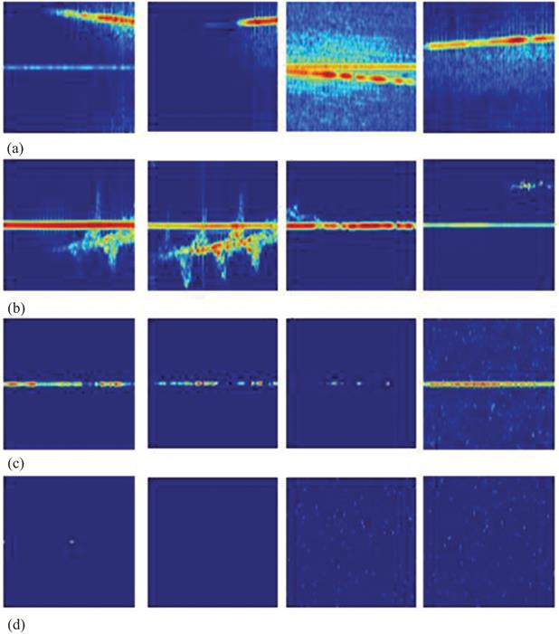
Figure 3.31 Example 94 GHz FMCW training data for a GoogLeNet classification of four classes: (a) UAV, (b) bird, (c) clutter and (d) noise [52]
In [46], 94 GHz CW data was used for GoogLeNet-based training to classify different types of UAVs. In Figure 3.24, it is shown that unambiguously sampled micro-Doppler spectrogram plots obtained from millimetre wave radar data reveal the different blade shape features quite clearly. A dataset of spectrograms of this type, suitable for classification by CNN, was created using CW data for three different classes (Phantom, S900 and Joyance). Each class consisted of 650 spectrogram images and the dataset was used to train GoogLeNet. Over 99% validation accuracy was achieved. The success of the method was then demonstrated by feeding images unknown to the model, which resulted in 100% classification accuracy in the case of the S900 and Joyance and 88% accuracy for the Phantom. The CNN-based classification outperformed a feature extraction and SVM-based classification of the same data that only achieved 75% accuracy. Additionally, the CNN classification was faster than the feature extraction. These are very promising results which illustrate that a large and diverse experimental radar dataset cannot only be used for classifying UAVs from other targets, but for classifying different models of UAVs as well.
Several practical issues need to be considered when using spectrogram image based neural network training. The more diverse the dataset is, the more robust it will be for general use. In [46], only a single-radar system with a fixed polarisation was used for data collection. More variation in the dataset can be achieved by utilising radar systems with different operating frequencies, polarisations, antenna beamwidths, sampling rates, etc. Data taken at different places will also create changes in the surrounding clutter. Variation in the signal processing can also be achieved (e.g. by varying STFT window parameters, intensity range, etc.), but careful consideration should be taken when doing so. It should be kept in mind that, fundamentally, radar spectrograms are not optical images, so changing parameters like noise floor threshold, STFT length and colour scale will alter the spectrograms significantly and may affect the CNN-based classification process. When developing a CNN-based model, careful decisions should be made regarding the extent of the versatility of the model being used in practice.
3.6 Conclusions
This chapter has presented an overview of the state of the art in a millimetre wave radar for UAV detection and classification. A literature survey of millimetre wave radar systems that have been applied to this application has been presented, highlighting the international breadth of the research groups involved. To date, the range of frequencies reported spans of 30–216 GHz. A small body of work has yielded RCS information for a few types of UAVs, measured both statically in anechoic chambers and dynamically in flight, and example values are presented. It is confirmed that RCS generally increases with UAV size and that the RCS of birds, which are key confusers, overlaps with UAVs, rendering RCS a poor discriminant. It is the high Doppler sensitivity afforded by millimetre wave radars which makes them of particular interest for revealing the micro-Doppler characteristics of UAVs, due to the high-speed propeller rotation. The nature of UAV micro-Doppler signatures obtained with an FMCW radar, which tends to be sub-Nyquist Doppler sampled, and a CW radar, which is more easily fully sampled, is compared. Researchers report processing these signals using a variety of time–frequency analysis techniques, but the STFT-based spectrogram remains the most common. FMCW data tends to allow the measurement of HERM lines, whilst CW data is able to reveal individual blade flashes; from both these forms of data, it is possible to extract details of the propeller rotation rate and blade length, potentially aiding classification.
As counter-UAV systems evolve, there is desire to move beyond simply confirming the presence of a UAV to wanting to know what type it is, whether it is carrying a payload or what might its intent might be, to determine the level of threat and guide the appropriate response. Recent results investigating the millimetre wave micro-Doppler signatures of drones equipped with payloads (liquid spray, heavy objects and inertial recoil) are summarised. A millimetre wave radar is uniquely placed to be able to detect the tiny droplets in a liquid spray dispensed by a UAV, benefitting from the frequency to the fourth power dependence of Rayleigh scattering. Whilst no reliable or unique signature is reported for heavy payloads, a drone-mounted gun would produce a distinct and classifiable recoil/counter-recoil signature in the bulk motion of the UAV.
The classification of drones is the ultimate goal when developing a counter-UAV system, be that drone versus bird or drone versus drone. A range of work has been reported applying different classification methods to millimetre wave radar data of UAVs. Feature extraction-based classification can achieve high performance but often at the expense of a heavy computational load. However, this approach remains favourable as the decision process is explainable, which is relevant for a security system which has to consider the legal implications of the way it operates. In contrast, neural network-based classification is attracting ever more interest and has been shown to achieve extremely high performance and comes with a speed benefit at the classification stage. However, neural networks are often seen as ‘black boxes’ whose inner workings are not easily interpretable. The main practical drawback is the requirement for large amounts of training data, which can be difficult to collect experimentally, or challenging to simulate with high fidelity.
There remain many opportunities for research in the field of a millimetre wave radar for UAV detection and classification. RCS statistics are only available for a small set of UAV types, little RCS modelling has been done at these frequencies, and the statistical fluctuation behaviour has not yet received sufficient attention. In terms of micro-Doppler, which is one of millimetre wave radar’s key advantages, there is potential for higher fidelity measurement and modelling of signatures, potentially leading to the identification of UAV types.
Looking forward to how millimetre wave radars might become used operationally in counter-UAV scenarios, it is likely that these will be in more specialist roles. The relatively limited range capability of millimetre wave radars for wide area surveillance makes it unlikely that they will be used as primary counter-UAV sensors. However, they are more relevant for shorter range (sub-km) scenarios or applications which require physically very compact sensors. The ability to gather richly detailed and high fidelity micro-Doppler signatures using a millimetre wave radar means that they could be used as secondary sensors for robust classification of targets detected and tracked by a lower frequency primary radar. Hunter-killer UAVs equipped with on-board, highly integrated, miniature radars are already being developed. The reduction in hardware costs arising from the commercialisation of millimetre wave semiconductor devices for mass market communications like 5G and 6G and single chip radars are enabling new opportunities for millimetre wave radars in the field of UAV detection and classification.
References
[1] V. C. Chen and S. Qian, “Joint time-frequency transform for radar range-Doppler imaging,” IEEE Trans. Aerosp. Electron. Syst., vol. 34, no. 2, pp. 486–499, 1998.
[2] V. C. Chen, F. Li, S.-S. Ho, and H. Wechsler, “Analysis of micro-Doppler signatures,” IEE Proc. Radar Sonar Navig., vol. 150, no. 4, p. 271, 2003.
[3] V. C. Chen, The micro-Doppler effect in radar. Norwood, MA: Artech House, 2011.
[4] J. S. Patel, F. Fioranelli, and D. Anderson, “Review of radar classification and RCS characterisation techniques for small UAVs or drones,” IET Radar Sonar Navig., vol. 12, no. 9, pp. 911–919, 2018.
[5] R. J. Wellman and J. L. Silvious, Doppler signature measurements of an MI-24 Hind-D Helicopter at 92 GHz. Adelphi, MD: Army Research Laboratory, 1998.
[6] A. S. Hedden, J. L. Silvious, C. R. Dietlein, J. A. Green, and D. A. Wikner, “Extremely high-frequency micro-Doppler measurements of humans,” in Radar Sensor Technology XVIII, 2014, vol. 9077, no. 29, p. 90771C.
[7] D. Tahmoush, “Detection of small UAV helicopters using micro-Doppler,” in Radar Sensor Technology XVIII, 2014, vol. 9077, p. 907717.
[8] J. Drozdowicz, M. Wielgo, P. Samczynski et al., “35 GHz FMCW drone detection system,” in Proceedings International Radar Symposium, 2016-June.
[9] M. Caris, W. Johannes, S. Stanko, and N. Pohl, “Millimeter wave radar for perimeter surveillance and detection of MAVs (Micro Aerial Vehicles),” in Proceedings International Radar Symposium, 2015-August, pp. 284–287.
[10] M. Caris, S. Stanko, W. Johannes, S. Sieger, and N. Pohl, “Detection and tracking of micro aerial vehicles with millimeter wave radar,” in European Microwave Week 2016: “Microwaves Everywhere”, EuMW 2016 – Conference Proceedings; 46th European Microwave Conference, EuMC 2016, 2016, pp. 1553–1555.
[11] D. Noetel, W. Johannes, M. Caris, A. Hommes, and S. Stanko, “Detection of MAVs (micro aerial vehicles) based on millimeter wave radar,” in Millimetre Wave and Terahertz Sensors and Technology IX, 2016, vol. 9993, p. 999308.
[12] M. Caris, W. Johannes, S. Sieger, V. Port, and S. Stanko, “Detection of small UAS with W-band radar,” in Proceedings International Radar Symposium, 2017.
[13] D. Nüßler, A. Shoykhetbrod, S. Gütgemann et al., “Detection of unmanned aerial vehicles (UAV) in urban environments,” in Emerging Imaging and Sensing Technologies for Security and Defence III; and Unmanned Sensors, Systems, and Countermeasures, 2018, vol. 10799, no. 4, p. 34.
[14] S. Engelbertz, C. Krebs, A. Küter, R. Herschel, R. Geschke, and D. Nüßler, “60 GHz low phase noise radar front-end design for the detection of micro drones,” in 16th European Radar Conference (EuRAD), 2019, pp. 25–28.
[15] J. Klare, O. Saalmann, and O. Biallawons, “The MIMO radar MIRA-CLE Ka,” in Conference Record – Asilomar Conference on Signals, Systems and Computers, 2013, pp. 1418–1422.
[16] J. Klare, O. Biallawons, and D. Cerutti-Maori, “UAV detection with MIMO radar,” in 2017 18th International Radar Symposium (IRS), Prague, 2017, pp. 1–8.
[17] J. Klare, O. Biallawons, and D. Cerutti-Maori, “Detection of UAVs using the MIMO radar MIRA-CLE Ka,” in Proceedings of EUSAR 2016: 11th European Conference on Synthetic Aperture Radar, 2016, pp. 1–4.
[18] U. Böniger, B. Ott, P. Wellig et al., “Detection of mini-UAVs in the presence of strong topographic relief: a multisensor perspective,” in Target and Background Signatures II, 2016, vol. 9997, p. 999702.
[19] L. Fuhrmann, O. Biallawons, J. Klare, R. Panhuber, R. Klenke, and J. Ender, “Micro-Doppler analysis and classification of UAVs at Ka band,” in Proceedings International Radar Symposium, 2017.
[20] S. Rahman and D. A. Robertson, “Millimeter-wave micro-Doppler measurements of small UAVs,” in Proc. SPIE 10188, Radar Sensor Technology XXI, 2017, vol. 10188, p. 101880T.
[21] S. Rahman and D. A. Robertson, “Time-frequency analysis of millimeter-wave radar micro-Doppler data from small UAVs,” in 2017 Sensor Signal Processing for Defence Conference, SSPD 2017, 2017-January, pp. 1–5.
[22] S. Rahman and D. A. Robertson, “FAROS-E: a compact and low-cost millimeter wave surveillance radar for real time drone detection and classification,” in Proceedings International Radar Symposium, 2021, June 21–22, Germany.
[23] A. K. Singh and Y. H. Kim, “Automatic measurement of blade length and rotation rate of drone using W-band micro-Doppler radar,” IEEE Sens. J., vol. 18, no. 5, pp. 1895–1902, 2018.
[24] A. K. Singh and Y. H. Kim, “Accurate measurement of drone’s blade length and rotation rate using pattern analysis with W-band radar,” Electron. Lett., vol. 54, no. 8, pp. 523–525, 2018.
[25] B. K. Kim, J. Park, S. J. Park et al., “Drone detection with chirp-pulse radar based on target fluctuation models,” ETRI J., vol. 40, no. 2, pp. 188–196, 2018.
[26] H. Stefan, M. Roeding, G. Sommerken, R. Mueller, R. S. Thomae, and G. Del Galdo, “Contribution to drone detection by exploiting parameter estimation for a prototype mm-wave radar system – VDE conference publication,” in WSA 2018; 22nd International ITG Workshop on Smart Antennas, 2018.
[27] P. Samczynski, K. Stasiak, D. Gromek, K. Kulpa, and J. Misiurewicz, “XY-DemoRad – Novel K- and mm-band radar demo kit for educational and commercial applications,” in Proceedings International Radar Symposium, 2019-June.
[28] “Silicon Radar GmbH – Manufacturer of Radar Front Ends, MMICs, ASICs.” [Online]. Available: https://siliconradar.com/. [Accessed: 26-Jan-2021].
[29] K. Stasiak, M. Ciesielski, P. Samczynski, D. Gromek, and K. Kulpa, “Preliminary results of drone’s propellers detection using K-band and mm-Wave FMCW radar,” in Proceedings International Radar Symposium, 2019-June.
[30] A. Cidronali, M. Passafiume, P. Colantonio et al., “System level analysis of millimetre-wave GaN-based MIMO radar for detection of micro unmanned aerial vehicles,” in Progress in Electromagnetics Research Symposium, 2019-June, pp. 438–450.
[31] S. Dogru, R. Baptista, and L. Marques, “Tracking drones with drones using millimeter wave radar,” in Advances in intelligent systems and computing (AISC), 2020, vol. 1093, pp. 392–402.
[32] S. Dogru and L. Marques, “Pursuing drones with drones using millimeter wave radar,” IEEE Robot. Autom. Lett., vol. 5, no. 3, pp. 4156–4163, 2020.
[33] “76 GHz Drone Detection Radar.” [Online]. Available: http://elva-1.com/news_events/a40120. [Accessed: 05-Mar-2020].
[34] D. Barrett, D. Wang, A. Ahmad, and V. Mahimkar, “Using mmWave sensors to enhance drone safety and productivity,” Texas Instruments (whitepaper) [Online]. Available: https://www.ti.com/lit/wp/spyy001/spyy001.pdf [Accessed: 02-Jul-2021].
[35] “Millimetre-wave Micro-Radar for Persistent Situational Awareness – Plextek DTS.” [Online]. Available: https://plextek-dts.com/portfolio/mmwave-radar/. [Accessed: 05-Mar-2020].
[36] “Russian Firm Developing Submillimeter Radars to Detect Small Drones.” [Online]. Available: https://www.defenseworld.net/news/26215/Russian_Firm_Developing_Submillimeter_Radars_to_Detect_Small_Drones#.Xwa8IOfTXIV. [Accessed: 09-Jul-2020].
[37] A. Schröder, M. Renker, U. Aulenbacher et al., “Numerical and experimental radar cross section analysis of the quadrocopter DJI Phantom 2,” in 2015 IEEE Radar Conference, 2015, pp. 463–468.
[38] M. Röding, G. Sommerkorn, S. Häfner et al., “Fully polarimetrie wideband RCS measurements for small drones,” in 2017 11th European Conference on Antennas and Propagation, EUCAP 2017, 2017, pp. 3926–3930.
[39] V. Semkin, J. Haarla, T. Pairon et al., “Analyzing radar cross section signatures of diverse drone models at mmWave frequencies,” IEEE Access, vol. 8, pp. 48958–48969, 2020.
[40] S. Rahman and D. A. Robertson, “In-flight RCS measurements of drones and birds at K-band and W-band,” IET Radar Sonar Navig., vol. 13, no. 2, pp. 300–309, 2019.
[41] D. A. Robertson and S. L. Cassidy, “Micro-Doppler and vibrometry at millimeter and sub-millimeter wavelengths,” in Proc. SPIE 8714, Radar Sensor Technology XVII, 2013, vol. 8714, p. 87141C.
[42] D. A. Robertson, G. M. Brooker, and P. D. L. Beasley, “Very low-phase noise, coherent 94 GHz radar for micro-Doppler and vibrometry studies,” in Proc. SPIE 9077, Radar Sensor Technology XVIII, 2014, vol. 9077, p. 907719.
[43] D. Blacknell and H. Griffiths, Radar automatic target recognition (ATR) and non-cooperative target recognition (NCTR). Institution of Engineering and Technology, London, 2013.
[44] S. Rahman and D. A. Robertson, “Radar micro-Doppler signatures of drones and birds at K-band and W-band,” Sci. Rep., vol. 8, no. 1, p. 17396, 2018.
[45] S. Rahman and D. A. Robertson, “Millimeter-wave radar micro-Doppler feature extraction of consumer drones and birds for target discrimination,” in Radar Sensor Technology XXIII, 2019, p. 28.
[46] S. Rahman and D. A. Robertson, “Multiple drone classification using millimeter-wave CW radar micro-Doppler data,” in Radar Sensor Technology XXIV, 2020, vol. 11408, no. 23, p. 15.
[47] O. Biallawons, J. Klare, and L. Fuhrmann, “Improved UAV detection with the MIMO radar MIRA-CLE Ka using range-velocity processing and TDMA correction algorithms,” in Proceedings International Radar Symposium, 2018-June.
[48] S. Rahman, D. A. Robertson, and M. A. Govoni, “Radar signatures of drones equipped with liquid spray payloads,” in IEEE Radar Conference (RadarConf20), Florence, 2020, pp. 1–5.
[49] “5L Economic Drone Agriculture Sprayer for Beginner | Drone Agriculture Sprayer | Joyance Tech.” [Online]. Available: http://www.foggerdrone.com/html/sprayer/products/low_price_drone_agriculture_sprayer_for_b.html. [Accessed: 26-Jan-2021].
[50] S. Rahman, D. A. Robertson, and M. A. Govoni, “Radar signatures of drones equipped with heavy payloads and dynamic payloads generating inertial forces,” IEEE Access, vol. 8, pp. 220542–220556, 2020.
[51] “‘Recoil’ Entry in Wikipedia.” [Online]. Available: https://en.wikipedia.org/wiki/Recoil.
[52] S. Rahman and D. A. Robertson, “Classification of drones and birds using convolutional neural networks applied to radar micro-Doppler spectrogram images,” IET Radar Sonar Navig., vol. 14, no. 5, pp. 653–661, 2020.
[53] C. Szegedy, W. Liu, Y. Jia et al., “Going deeper with convolutions,” in 2015 IEEE Conference on Computer Vision and Pattern Recognition (CVPR), 2015, pp. 1–9.
1School of Physics and Astronomy, University of St Andrews, St Andrews, United Kingdom